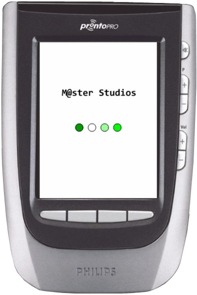
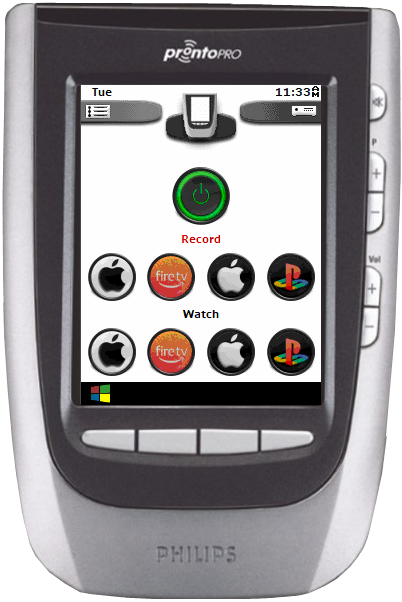
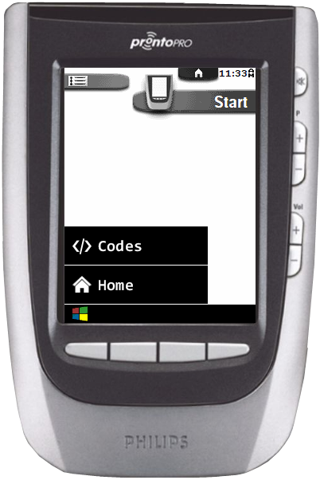
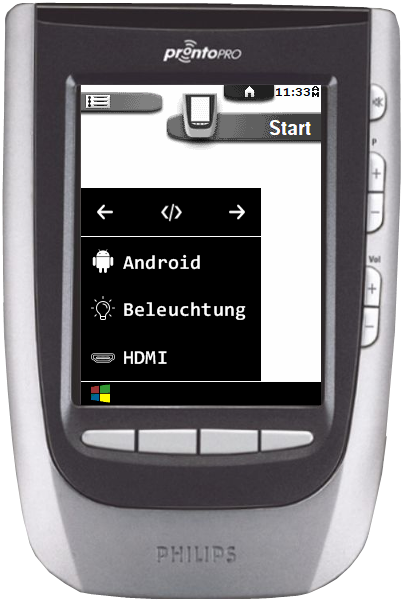
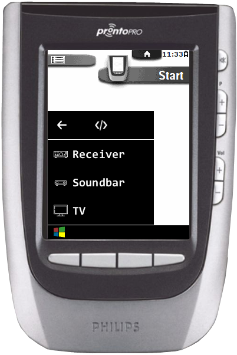
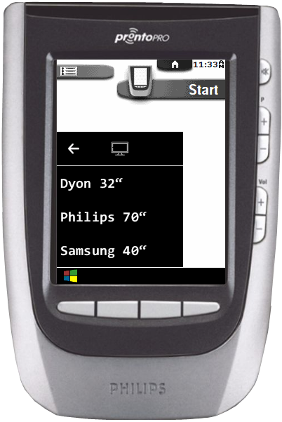
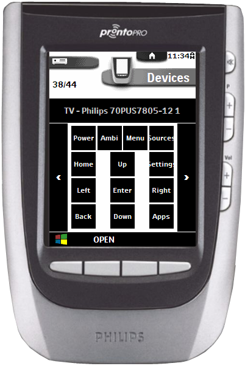
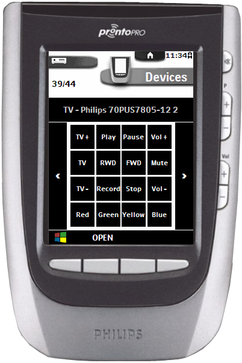
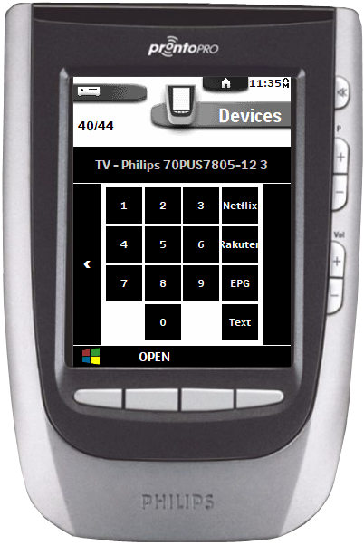

Philips Pronto
Hier findet ihr ein Windows-Like-Skin für die Philips Pronto RU970. Es ist möglichst simpel gehalten und erfüllt im wesentlichen 2 Funktionen - eine einfache Steuerung meines HDMI-Splitters und eine Datenbank meiner Geräte.
Die Software der Pronto unterteilt sich in 3 Abschnitte: Home - Devices - Macros. Diese habe ich wie folgt aufgeteilt:
Home = Benutzerfernbedienung(en)
Devices = Windows-Like Startmenü
Macros = Datenbanken (Schönheitsfehler: die Hardware-Taste "OPEN" lässt sich nicht cleanen)
Um das Skin voll zu nutzen, müsst ihr die Firmware flashen. Hier habe ich das Windows-Icon eingebettet und die Farben der Menüführung in Graustufen verändert, da das alte LCD-Display der Pronto unheimlich verzerrt, wenn zu viele Farben im Spiel sind oder der Kontrast zu hoch ist.
Bugs: 2 Bitmaps konnten in der Firmware aufgrund ihrer Dateigrösse nicht ersetzt werden. Fällt aber erstmal nicht auf. Bugfixes to follow...
Viel Spass mit dem Skin!
Danke an Eigeny Oulianov und dessen Tool ImgRep, mit dem ich die Firmware und den Emulator mit meinen Icons versehen habe.
Die Software der Pronto unterteilt sich in 3 Abschnitte: Home - Devices - Macros. Diese habe ich wie folgt aufgeteilt:
Home = Benutzerfernbedienung(en)
Devices = Windows-Like Startmenü
Macros = Datenbanken (Schönheitsfehler: die Hardware-Taste "OPEN" lässt sich nicht cleanen)
Um das Skin voll zu nutzen, müsst ihr die Firmware flashen. Hier habe ich das Windows-Icon eingebettet und die Farben der Menüführung in Graustufen verändert, da das alte LCD-Display der Pronto unheimlich verzerrt, wenn zu viele Farben im Spiel sind oder der Kontrast zu hoch ist.
Bugs: 2 Bitmaps konnten in der Firmware aufgrund ihrer Dateigrösse nicht ersetzt werden. Fällt aber erstmal nicht auf. Bugfixes to follow...
Viel Spass mit dem Skin!
Danke an Eigeny Oulianov und dessen Tool ImgRep, mit dem ich die Firmware und den Emulator mit meinen Icons versehen habe.








